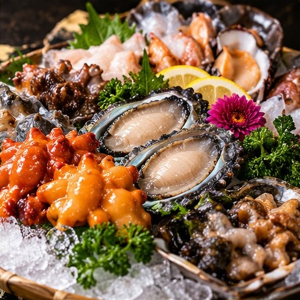

POHANG SEAFOOD · MENU
포항 신선한 해산물
전복·멍게·해삼 등 다양한 해산물 메뉴
어떤 메뉴가 특징일까요?
해산물을 좋아한다면 전복과 멍게, 해삼 등 다양한 해산물 구성을 살펴보세요. 실제 제공 품목은 입고 상황과 메뉴에 따라 달라질 수 있습니다.
해산물 메뉴와 모임 식사
자연산회나 대게 등 다른 메뉴와 함께 식사를 계획할 때에도 인원과 구성에 맞춰 문의할 수 있습니다.

전복·멍게·해삼 등 다양한 해산물 메뉴
해산물을 좋아한다면 전복과 멍게, 해삼 등 다양한 해산물 구성을 살펴보세요. 실제 제공 품목은 입고 상황과 메뉴에 따라 달라질 수 있습니다.
자연산회나 대게 등 다른 메뉴와 함께 식사를 계획할 때에도 인원과 구성에 맞춰 문의할 수 있습니다.